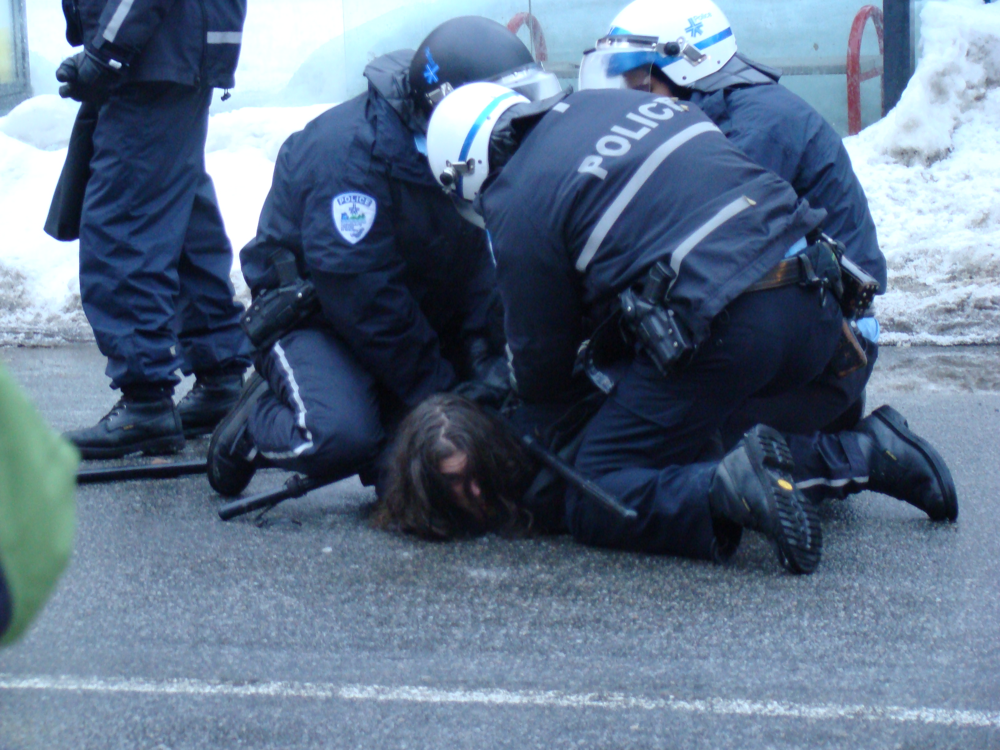

What is police brutality exactly? It is police who take negative advantage of their authority and abuse it when their real job is to ensure law and order. Unfortunately, there have been many cases of police brutality, such as the death of Eric Garner, who was killed by police by chokehold on July 17, 2014. This then gave birth to the infamous phrase, then protest, "I CAN'T BREATHE". Another example was when a young man named Michael Brown was shot and killed by a white officer named Darren Wilson in Ferguson, Missouri. He was only 18 years old and was unarmed when he was shot by a police officer in Ferguson, Missouri.
